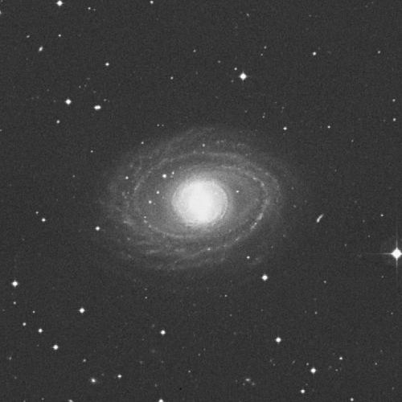
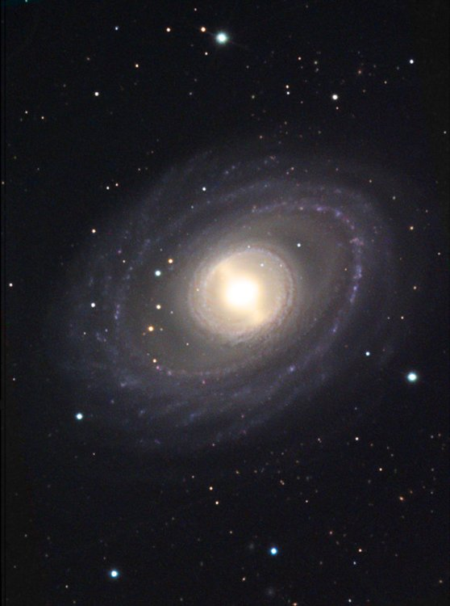
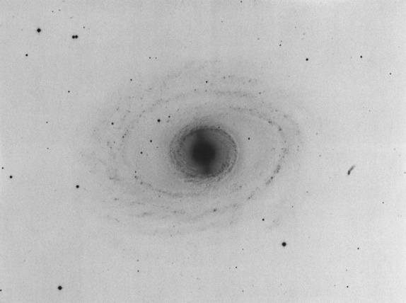

NGC 1398
B&W digitzed photo from the Digital Sky Survey.
North is up and East to left.
C
Color image by NOAO's Astro-Camper staff.
Taken with an SBIG ST10XME CCD on a 20" f/8.4 telescope.



This photo negative best shows the beautiful bar. It was taken at Las Campanas Observatory using 103a0 emulsion.